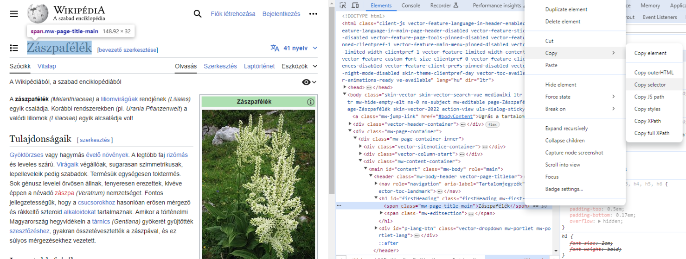

Adatbányászat - Web scraping#
Adatok és információk weboldalakról kinyerésével foglalkozik.
Szükséges könyvtárak telepítése, importálása#
#%pip install bs4
#%pip install requests
from bs4 import BeautifulSoup
import requests as re
import time
1. Mintafeladat#
https://www.scrapethissite.com/pages/simple/ weboldalról gyűjtsük ki az adatokat.
Megoldáshoz vezető lépések:
weboldal felmérése
kérdés(ek) megfogalmazása
adatgyűjtés
küzdelem a begyűjtött adatokkal
kérdés(ek) megválaszolása
megoldás bemutatása mások számára is érthető módon
Weboldal elérése#
url = "https://www.scrapethissite.com/pages/simple/"
response = re.get(url)
print(response)
<Response [200]>
print() limitálása#
Az adatbányászat témakörnél előfordul, hogy egy egyszerű print() utasítás kimenete terjedelmes és rontja a jegyzet olvashatóságát. Az alábbi függvény segítségével limitáljuk a kimenetet. Általában 1000 karakterből el tudjuk dönteni a kimenet helyességét, de szükség esetén könnyen növelhető, csökkenthető.
obj - mit szeretnénk kiíratni?
length - hány karakternyit szeretnék kiíratni?
def printLimited(obj, length):
print(str(obj)[:length])
Weboldal tartalmának kinyerése#
soup = BeautifulSoup(response.text, "html.parser")
printLimited(soup, 1000)
<!DOCTYPE html>
<html lang="en">
<head>
<meta charset="utf-8"/>
<title>Countries of the World: A Simple Example | Scrape This Site | A public sandbox for learning web scraping</title>
<link href="/static/images/scraper-icon.png" rel="icon" type="image/png"/>
<meta content="width=device-width, initial-scale=1.0" name="viewport"/>
<meta content="A single page that lists information about all the countries in the world. Good for those just get started with web scraping." name="description"/>
<link crossorigin="anonymous" href="https://maxcdn.bootstrapcdn.com/bootstrap/3.3.5/css/bootstrap.min.css" integrity="sha256-MfvZlkHCEqatNoGiOXveE8FIwMzZg4W85qfrfIFBfYc= sha512-dTfge/zgoMYpP7QbHy4gWMEGsbsdZeCXz7irItjcC3sPUFtf0kuFbDz/ixG7ArTxmDjLXDmezHubeNikyKGVyQ==" rel="stylesheet"/>
<link href="https://fonts.googleapis.com/css?family=Lato:400,700" rel="stylesheet" type="text/css"/>
<link href="/static/css/styles.css" rel="stylesheet" type="text/css"/>
<meta content="noindex" name="robots"/>
<link h
Cím kiíratása - title#
print(soup.title)
print(soup.title.string)
<title>Countries of the World: A Simple Example | Scrape This Site | A public sandbox for learning web scraping</title>
Countries of the World: A Simple Example | Scrape This Site | A public sandbox for learning web scraping
Ország(ok) nevei - find és find_all#
#h3
countries = soup.find()
printLimited(countries, 500)
<html lang="en">
<head>
<meta charset="utf-8"/>
<title>Countries of the World: A Simple Example | Scrape This Site | A public sandbox for learning web scraping</title>
<link href="/static/images/scraper-icon.png" rel="icon" type="image/png"/>
<meta content="width=device-width, initial-scale=1.0" name="viewport"/>
<meta content="A single page that lists information about all the countries in the world. Good for those just get started with web scraping." name="description"/>
<link crossorigin="ano
Ország(ok) adatai#
Milyen tag tartalmazza a kívánt adatot? Van azonosítója?
print(soup.find("span", class_="country-capital").text)
Andorra la Vella
Leg… országok#
Mennyi a legnagyobb ország népessége?
Milyen lenne az “átlagos” ország?
Hány ország adatait gyűjtöttük ki?
population = soup.find_all("span", class_="country-population")
population_numbers = []
for item in population:
population_numbers.append(int(item.text))
2. Kiválasztott weboldal elérése#
200-as kód sikeres lekérést jelöl
url = "https://hu.wikipedia.org/wiki/Kateg%C3%B3ria:N%C3%B6v%C3%A9nycsal%C3%A1dok"
response = re.get(url)
print(response.status_code)
if response.status_code == 200:
print("Siker!")
200
Siker!
BeautifulSoup könyvtár alapok#
Weboldal struktúrájának kinyerése
soup = BeautifulSoup(response.text, "html.parser")
Feladat - ellenőrizd le a soup változó tartalmát!#
printLimited(soup, 500)
<!DOCTYPE html>
<html class="client-nojs vector-feature-language-in-header-enabled vector-feature-language-in-main-page-header-disabled vector-feature-sticky-header-disabled vector-feature-page-tools-pinned-disabled vector-feature-toc-pinned-clientpref-1 vector-feature-main-menu-pinned-disabled vector-feature-limited-width-clientpref-1 vector-feature-limited-width-content-disabled vector-feature-custom-font-size-clientpref-0 vector-feature-appearance-disabled vector-feature-appearance-pinned-cl
A kiíratást meg lehet csinálni szebben is a prettify() paranccsal, viszont az eredménye a printLimited() függvény miatt nem fog látszódni.
printLimited(soup.prettify(), 500)
<!DOCTYPE html>
<html class="client-nojs vector-feature-language-in-header-enabled vector-feature-language-in-main-page-header-disabled vector-feature-sticky-header-disabled vector-feature-page-tools-pinned-disabled vector-feature-toc-pinned-clientpref-1 vector-feature-main-menu-pinned-disabled vector-feature-limited-width-clientpref-1 vector-feature-limited-width-content-disabled vector-feature-custom-font-size-clientpref-0 vector-feature-appearance-disabled vector-feature-appearance-pinned-cli
Bizonyos HTML tag keresése#
prettify() itt is működik
articles = soup.find("div")
printLimited(articles, 500)
<div class="vector-header-container">
<header class="vector-header mw-header">
<div class="vector-header-start">
<nav aria-label="Wiki" class="vector-main-menu-landmark" role="navigation">
<div class="vector-dropdown vector-main-menu-dropdown vector-button-flush-left vector-button-flush-right" id="vector-main-menu-dropdown">
<input aria-haspopup="true" aria-label="Főmenü" class="vector-dropdown-checkbox" data-event-name="ui.dropdown-vector-main-menu-dropdown" id="vector-main-menu-dropdown-checkb
A választott weboldalon jobb kattintás után Vizsgálat (Inspect) funkció sok hasznos információt árul el a weboldal felépítéséről.

#mw-category mw-category-columns
articles = soup.find("div", class_="mw-category mw-category-columns")
printLimited(articles, 500)
<div class="mw-category mw-category-columns"><div class="mw-category-group"><h3> </h3>
<ul><li><a href="/wiki/N%C3%B6v%C3%A9nycsal%C3%A1dok_list%C3%A1ja" title="Növénycsaládok listája">Növénycsaládok listája</a></li></ul></div><div class="mw-category-group"><h3>A</h3>
<ul><li><a href="/wiki/Alk%C3%B6rm%C3%B6sf%C3%A9l%C3%A9k" title="Alkörmösfélék">Alkörmösfélék</a></li>
<li><a href="/wiki/%C3%81ltiszafaf%C3%A9l%C3%A9k" title="Áltiszafafélék">Áltiszafafélék</a></li>
<li><a href="/wiki/Amarilliszf%
links = []
for link in articles.find_all('a'):
links.append("https://hu.wikipedia.org"+link.get('href'))
for item in links:
print(item)
https://hu.wikipedia.org/wiki/N%C3%B6v%C3%A9nycsal%C3%A1dok_list%C3%A1ja
https://hu.wikipedia.org/wiki/Alk%C3%B6rm%C3%B6sf%C3%A9l%C3%A9k
https://hu.wikipedia.org/wiki/%C3%81ltiszafaf%C3%A9l%C3%A9k
https://hu.wikipedia.org/wiki/Amarilliszf%C3%A9l%C3%A9k
https://hu.wikipedia.org/wiki/Anacampserotaceae
https://hu.wikipedia.org/wiki/Ann%C3%B3naf%C3%A9l%C3%A9k
https://hu.wikipedia.org/wiki/Apodanthaceae
https://hu.wikipedia.org/wiki/Ar%C3%A1liaf%C3%A9l%C3%A9k
https://hu.wikipedia.org/wiki/Arauk%C3%A1riaf%C3%A9l%C3%A9k
https://hu.wikipedia.org/wiki/%C3%81rvacsal%C3%A1nf%C3%A9l%C3%A9k
https://hu.wikipedia.org/wiki/Bab%C3%A9rf%C3%A9l%C3%A9k
https://hu.wikipedia.org/wiki/B%C3%A1lv%C3%A1nyfaf%C3%A9l%C3%A9k
https://hu.wikipedia.org/wiki/Ban%C3%A1nf%C3%A9l%C3%A9k
https://hu.wikipedia.org/wiki/Barkamirtuszf%C3%A9l%C3%A9k
https://hu.wikipedia.org/wiki/Beg%C3%B3niaf%C3%A9l%C3%A9k
https://hu.wikipedia.org/wiki/B%C3%A9kasz%C5%91l%C5%91f%C3%A9l%C3%A9k
https://hu.wikipedia.org/wiki/B%C3%A9katutajf%C3%A9l%C3%A9k
https://hu.wikipedia.org/wiki/Bengef%C3%A9l%C3%A9k
https://hu.wikipedia.org/wiki/Bogl%C3%A1rkaf%C3%A9l%C3%A9k
https://hu.wikipedia.org/wiki/Bor%C3%A1g%C3%B3f%C3%A9l%C3%A9k
https://hu.wikipedia.org/wiki/Borbolyaf%C3%A9l%C3%A9k
https://hu.wikipedia.org/wiki/Boroszl%C3%A1nf%C3%A9l%C3%A9k
https://hu.wikipedia.org/wiki/Borsf%C3%A9l%C3%A9k
https://hu.wikipedia.org/wiki/Brom%C3%A9liaf%C3%A9l%C3%A9k
https://hu.wikipedia.org/wiki/Bunk%C3%B3sp%C3%A1lmaf%C3%A9l%C3%A9k
https://hu.wikipedia.org/wiki/Burgonyaf%C3%A9l%C3%A9k
https://hu.wikipedia.org/wiki/Buz%C3%A9rf%C3%A9l%C3%A9k
https://hu.wikipedia.org/wiki/B%C3%BCkkfaf%C3%A9l%C3%A9k
https://hu.wikipedia.org/wiki/Chlamydomonadaceae
https://hu.wikipedia.org/wiki/Cik%C3%A1szf%C3%A9l%C3%A9k
https://hu.wikipedia.org/wiki/Ciprusf%C3%A9l%C3%A9k
https://hu.wikipedia.org/wiki/Cleomaceae
https://hu.wikipedia.org/wiki/Csal%C3%A1nf%C3%A9l%C3%A9k
https://hu.wikipedia.org/wiki/Csatavir%C3%A1gf%C3%A9l%C3%A9k
https://hu.wikipedia.org/wiki/Csavarp%C3%A1lmaf%C3%A9l%C3%A9k
https://hu.wikipedia.org/wiki/Csik%C3%B3fark
https://hu.wikipedia.org/wiki/Csipkeharasztok
https://hu.wikipedia.org/wiki/Csodat%C3%B6lcs%C3%A9rf%C3%A9l%C3%A9k
https://hu.wikipedia.org/wiki/Csuporkaf%C3%A9l%C3%A9k
https://hu.wikipedia.org/wiki/Dasypogonaceae
https://hu.wikipedia.org/wiki/Dill%C3%A9niaf%C3%A9l%C3%A9k
https://hu.wikipedia.org/wiki/Dinnyefaf%C3%A9l%C3%A9k
https://hu.wikipedia.org/wiki/Di%C3%B3faf%C3%A9l%C3%A9k
https://hu.wikipedia.org/wiki/Dipentodontaceae
https://hu.wikipedia.org/wiki/Dipterokarpuszf%C3%A9l%C3%A9k
https://hu.wikipedia.org/wiki/D%C3%ADszlev%C3%A9lfaf%C3%A9l%C3%A9k
https://hu.wikipedia.org/wiki/Diszn%C3%B3par%C3%A9jf%C3%A9l%C3%A9k
https://hu.wikipedia.org/wiki/Eperfaf%C3%A9l%C3%A9k
https://hu.wikipedia.org/wiki/Escalloniaceae
https://hu.wikipedia.org/wiki/Ez%C3%BCstfaf%C3%A9l%C3%A9k
https://hu.wikipedia.org/wiki/Fak%C3%ADnf%C3%A9l%C3%A9k
https://hu.wikipedia.org/wiki/Farkasalmaf%C3%A9l%C3%A9k
https://hu.wikipedia.org/wiki/Feny%C5%91f%C3%A9l%C3%A9k
https://hu.wikipedia.org/wiki/Fissidentaceae
https://hu.wikipedia.org/wiki/Fogpiszk%C3%A1l%C3%B3f%C5%B1
https://hu.wikipedia.org/wiki/F%C5%B1faf%C3%A9l%C3%A9k
https://hu.wikipedia.org/wiki/F%C5%B1szercserjef%C3%A9l%C3%A9k
https://hu.wikipedia.org/wiki/F%C3%BCz%C3%A9nyf%C3%A9l%C3%A9k
https://hu.wikipedia.org/wiki/F%C5%B1zfaf%C3%A9l%C3%A9k
https://hu.wikipedia.org/wiki/Gn%C3%A9tum
https://hu.wikipedia.org/wiki/Golgotavir%C3%A1gf%C3%A9l%C3%A9k
https://hu.wikipedia.org/wiki/G%C3%B3lyaorrf%C3%A9l%C3%A9k
https://hu.wikipedia.org/wiki/G%C3%B6rv%C3%A9lyf%C5%B1f%C3%A9l%C3%A9k
https://hu.wikipedia.org/wiki/Gy%C3%A9k%C3%A9nyf%C3%A9l%C3%A9k
https://hu.wikipedia.org/wiki/Gyommohaf%C3%A9l%C3%A9k
https://hu.wikipedia.org/wiki/Gy%C3%B6mb%C3%A9rf%C3%A9l%C3%A9k
https://hu.wikipedia.org/wiki/Gy%C3%B6ngyvir%C3%A1gfaf%C3%A9l%C3%A9k
https://hu.wikipedia.org/wiki/Halimedaceae
https://hu.wikipedia.org/wiki/Hangaf%C3%A9l%C3%A9k
https://hu.wikipedia.org/wiki/Harangvir%C3%A1gf%C3%A9l%C3%A9k
https://hu.wikipedia.org/wiki/Harmatf%C5%B1f%C3%A9l%C3%A9k
https://hu.wikipedia.org/wiki/Hernandiaceae
https://hu.wikipedia.org/wiki/H%C3%ADd%C5%91rf%C3%A9l%C3%A9k
https://hu.wikipedia.org/wiki/Hortenziaf%C3%A9l%C3%A9k
https://hu.wikipedia.org/wiki/Hydatellaceae
https://hu.wikipedia.org/wiki/Hypoxidaceae
https://hu.wikipedia.org/wiki/Ibolyaf%C3%A9l%C3%A9k
https://hu.wikipedia.org/wiki/Jap%C3%A1n_erny%C5%91feny%C5%91
https://hu.wikipedia.org/wiki/Kaktuszf%C3%A9l%C3%A9k
https://hu.wikipedia.org/wiki/K%C3%A1lmosvir%C3%A1g%C3%BAak
https://hu.wikipedia.org/wiki/Kankalinf%C3%A9l%C3%A9k
https://hu.wikipedia.org/wiki/Kannaf%C3%A9l%C3%A9k
https://hu.wikipedia.org/wiki/K%C3%A1posztaf%C3%A9l%C3%A9k
https://hu.wikipedia.org/wiki/Kaprif%C3%A9l%C3%A9k
https://hu.wikipedia.org/wiki/Kazu%C3%A1rfaf%C3%A9l%C3%A9k
https://hu.wikipedia.org/wiki/Kecsker%C3%A1g%C3%B3f%C3%A9l%C3%A9k
https://hu.wikipedia.org/wiki/K%C3%A9kh%C3%BCvelyf%C3%A9l%C3%A9k
https://hu.wikipedia.org/wiki/Kenderf%C3%A9l%C3%A9k
https://hu.wikipedia.org/wiki/Keser%C5%B1f%C5%B1f%C3%A9l%C3%A9k
https://hu.wikipedia.org/wiki/Kikericsf%C3%A9l%C3%A9k
https://hu.wikipedia.org/wiki/Kontyvir%C3%A1gf%C3%A9l%C3%A9k
https://hu.wikipedia.org/wiki/Kosborf%C3%A9l%C3%A9k
https://hu.wikipedia.org/wiki/K%C5%91tiszafaf%C3%A9l%C3%A9k
https://hu.wikipedia.org/wiki/K%C5%91t%C3%B6r%C5%91f%C5%B1f%C3%A9l%C3%A9k
https://hu.wikipedia.org/wiki/Krist%C3%A1lyvir%C3%A1gf%C3%A9l%C3%A9k
https://hu.wikipedia.org/wiki/Kutyatejf%C3%A9l%C3%A9k
https://hu.wikipedia.org/wiki/K%C3%BCll%C5%91folyond%C3%A1rf%C3%A9l%C3%A9k
https://hu.wikipedia.org/wiki/K%C3%BCrtvir%C3%A1gf%C3%A9l%C3%A9k
https://hu.wikipedia.org/wiki/Laxmanniaceae
https://hu.wikipedia.org/wiki/Lenf%C3%A9l%C3%A9k
https://hu.wikipedia.org/wiki/Ligetsz%C3%A9pef%C3%A9l%C3%A9k
https://hu.wikipedia.org/wiki/Liliomfaf%C3%A9l%C3%A9k
https://hu.wikipedia.org/wiki/Liliomf%C3%A9l%C3%A9k
https://hu.wikipedia.org/wiki/Loncf%C3%A9l%C3%A9k
https://hu.wikipedia.org/wiki/L%C3%B3tuszf%C3%A9l%C3%A9k
https://hu.wikipedia.org/wiki/Mad%C3%A1rs%C3%B3skaf%C3%A9l%C3%A9k
https://hu.wikipedia.org/wiki/Magyal
https://hu.wikipedia.org/wiki/M%C3%A1kf%C3%A9l%C3%A9k
https://hu.wikipedia.org/wiki/Malpighicserjef%C3%A9l%C3%A9k
https://hu.wikipedia.org/wiki/M%C3%A1lyvaf%C3%A9l%C3%A9k
https://hu.wikipedia.org/wiki/Medvek%C3%B6r%C3%B6mf%C3%A9l%C3%A9k
https://hu.wikipedia.org/wiki/Met%C3%A9ngf%C3%A9l%C3%A9k
https://hu.wikipedia.org/wiki/Mirtuszf%C3%A9l%C3%A9k
https://hu.wikipedia.org/wiki/Mocs%C3%A1rciprusf%C3%A9l%C3%A9k
https://hu.wikipedia.org/wiki/Musk%C3%A1tdi%C3%B3f%C3%A9l%C3%A9k
https://hu.wikipedia.org/wiki/Neb%C3%A1ncsvir%C3%A1gf%C3%A9l%C3%A9k
https://hu.wikipedia.org/wiki/N%C5%91sziromf%C3%A9l%C3%A9k
https://hu.wikipedia.org/wiki/Ny%C3%ADlgy%C3%B6k%C3%A9rf%C3%A9l%C3%A9k
https://hu.wikipedia.org/wiki/Ny%C3%ADrfaf%C3%A9l%C3%A9k
https://hu.wikipedia.org/wiki/Olajfaf%C3%A9l%C3%A9k
https://hu.wikipedia.org/wiki/%C3%93lomgy%C3%B6k%C3%A9rf%C3%A9l%C3%A9k
https://hu.wikipedia.org/wiki/Orb%C3%A1ncf%C5%B1f%C3%A9l%C3%A9k
https://hu.wikipedia.org/wiki/%C3%93ri%C3%A1svir%C3%A1gf%C3%A9l%C3%A9k
https://hu.wikipedia.org/wiki/%C5%90szir%C3%B3zsaf%C3%A9l%C3%A9k
https://hu.wikipedia.org/wiki/P%C3%A1fr%C3%A1nyfeny%C5%91f%C3%A9l%C3%A9k
https://hu.wikipedia.org/wiki/Palkaf%C3%A9l%C3%A9k
https://hu.wikipedia.org/wiki/P%C3%A1lmaf%C3%A9l%C3%A9k
https://hu.wikipedia.org/wiki/Papag%C3%A1jvir%C3%A1g-f%C3%A9l%C3%A9k
https://hu.wikipedia.org/wiki/Paracryphiaceae
https://hu.wikipedia.org/wiki/Perjef%C3%A9l%C3%A9k
https://hu.wikipedia.org/wiki/Petrosaviaceae
https://hu.wikipedia.org/wiki/P%C3%A9zsmabogl%C3%A1rf%C3%A9l%C3%A9k
https://hu.wikipedia.org/wiki/Philesiaceae
https://hu.wikipedia.org/wiki/Picramniaceae
https://hu.wikipedia.org/wiki/Pillang%C3%B3svir%C3%A1g%C3%BAak
https://hu.wikipedia.org/wiki/Plat%C3%A1nf%C3%A9l%C3%A9k
https://hu.wikipedia.org/wiki/Porcsinf%C3%A9l%C3%A9k
https://hu.wikipedia.org/wiki/Pottiaceae
https://hu.wikipedia.org/wiki/Pr%C3%B3teaf%C3%A9l%C3%A9k
https://hu.wikipedia.org/wiki/Puszp%C3%A1ngf%C3%A9l%C3%A9k
https://hu.wikipedia.org/wiki/Rezedaf%C3%A9l%C3%A9k
https://hu.wikipedia.org/wiki/R%C3%B3zsaf%C3%A9l%C3%A9k
https://hu.wikipedia.org/wiki/Rutaf%C3%A9l%C3%A9k
https://hu.wikipedia.org/wiki/Sabiaceae
https://hu.wikipedia.org/wiki/Saururaceae
https://hu.wikipedia.org/wiki/Schisandraceae
https://hu.wikipedia.org/wiki/Schoepfiaceae
https://hu.wikipedia.org/wiki/Somf%C3%A9l%C3%A9k
https://hu.wikipedia.org/wiki/Sp%C3%A1rgaf%C3%A9l%C3%A9k
https://hu.wikipedia.org/wiki/Szappanfaf%C3%A9l%C3%A9k
https://hu.wikipedia.org/wiki/Szegf%C5%B1f%C3%A9l%C3%A9k
https://hu.wikipedia.org/wiki/Szilfaf%C3%A9l%C3%A9k
https://hu.wikipedia.org/wiki/Szitty%C3%B3f%C3%A9l%C3%A9k
https://hu.wikipedia.org/wiki/Szivarfaf%C3%A9l%C3%A9k
https://hu.wikipedia.org/wiki/Sz%C5%91l%C5%91f%C3%A9l%C3%A9k
https://hu.wikipedia.org/wiki/Sz%C3%B6m%C3%B6rcef%C3%A9l%C3%A9k
https://hu.wikipedia.org/wiki/Szuharf%C3%A9l%C3%A9k
https://hu.wikipedia.org/wiki/Szul%C3%A1kf%C3%A9l%C3%A9k
https://hu.wikipedia.org/wiki/T%C3%A1rnicsf%C3%A9l%C3%A9k
https://hu.wikipedia.org/wiki/Teaf%C3%A9l%C3%A9k
https://hu.wikipedia.org/wiki/Tiszafaf%C3%A9l%C3%A9k
https://hu.wikipedia.org/wiki/T%C3%B6kf%C3%A9l%C3%A9k
https://hu.wikipedia.org/wiki/Trochodendraceae
https://hu.wikipedia.org/wiki/T%C3%BCnd%C3%A9rh%C3%ADn%C3%A1rf%C3%A9l%C3%A9k
https://hu.wikipedia.org/wiki/T%C3%BCnd%C3%A9rr%C3%B3zsaf%C3%A9l%C3%A9k
https://hu.wikipedia.org/wiki/%C3%9Atif%C5%B1f%C3%A9l%C3%A9k
https://hu.wikipedia.org/wiki/Vajvir%C3%A1gf%C3%A9l%C3%A9k
https://hu.wikipedia.org/wiki/Varj%C3%BAh%C3%A1jf%C3%A9l%C3%A9k
https://hu.wikipedia.org/wiki/Vasf%C5%B1f%C3%A9l%C3%A9k
https://hu.wikipedia.org/wiki/Vell%C3%B3ziaf%C3%A9l%C3%A9k
https://hu.wikipedia.org/wiki/Vidraf%C5%B1f%C3%A9l%C3%A9k
https://hu.wikipedia.org/wiki/Vill%C3%A1sp%C3%A1lmaf%C3%A9l%C3%A9k
https://hu.wikipedia.org/wiki/Vir%C3%A1gk%C3%A1kaf%C3%A9l%C3%A9k
https://hu.wikipedia.org/wiki/Vir%C3%A1gs%C3%A1sf%C3%A9l%C3%A9k
https://hu.wikipedia.org/wiki/V%C3%ADzij%C3%A1cintf%C3%A9l%C3%A9k
https://hu.wikipedia.org/wiki/Volvocaceae
https://hu.wikipedia.org/wiki/Z%C3%A1szpaf%C3%A9l%C3%A9k
https://hu.wikipedia.org/wiki/Zellerf%C3%A9l%C3%A9k
https://hu.wikipedia.org/wiki/Zsurl%C3%B3faf%C3%A9l%C3%A9k
https://hu.wikipedia.org/wiki/Zsurl%C3%B3f%C3%A9l%C3%A9k
Egy weblap adatainak kigyűjtése#

#mw-content-text > div.mw-content-ltr.mw-parser-output > p:nth-of-type(2)
#firstHeading > span.mw-page-title-main
url = "https://hu.wikipedia.org/wiki/Z%C3%A1szpaf%C3%A9l%C3%A9k"
response = re.get(url)
soup = BeautifulSoup(response.text, "html.parser")
x = soup.select("#mw-content-text > div.mw-content-ltr.mw-parser-output > p:nth-of-type(2)")
title = soup.select("#firstHeading > span.mw-page-title-main")
print(title[0].text)
print(x[0].text)
Zászpafélék
Gyöktörzses vagy hagymás évelő növények. A legtöbb faj rizómás és leveles szárú. Virágaik végállóak, sugarasan szimmetrikusak, lepelleveleik pedig szabadok. Termésük egységesen toktermés. Sok génusz levelei örvösen állnak, tenyeresen erezettek, kivéve éppen a névadó zászpa (Veratrum) nemzetséget. Fontos jellegzetességük, hogy a csucsorokhoz hasonlóan erősen mérgező és rákkeltő szteroid alkaloidokat tartalmaznak. Amikor a történelmi Magyarország hegyvidékein a tárnics (Gentiana) gyökerét gyűjtötték szeszfőzéshez, gyakran összetévesztették a zászpával, és ez súlyos mérgezésekhez vezetett.
Összes weblap adatainak kigyűjtése fájlba#
f = open("data_plant.csv", "a", encoding = "utf-8")
for item in range(0,len(links)):
response = re.get(links[item])
soup = BeautifulSoup(response.text, "html.parser")
title = soup.select("#firstHeading > span.mw-page-title-main")[0].text
description = soup.find("div", {"class": "mw-content-ltr mw-parser-output"}).find_all("p")[2].text
f.write(str(title) + ',' + str(description))
print("|", end="")
time.sleep(1)
f.close()
|
|
|
|
|
|
|
|
|
|
|
|
|
|
|
|
|
---------------------------------------------------------------------------
KeyboardInterrupt Traceback (most recent call last)
Cell In[18], line 4
1 f = open("data_plant.csv", "a", encoding = "utf-8")
3 for item in range(0,len(links)):
----> 4 response = re.get(links[item])
5 soup = BeautifulSoup(response.text, "html.parser")
6 title = soup.select("#firstHeading > span.mw-page-title-main")[0].text
File c:\Python312\Lib\site-packages\requests\api.py:73, in get(url, params, **kwargs)
62 def get(url, params=None, **kwargs):
63 r"""Sends a GET request.
64
65 :param url: URL for the new :class:`Request` object.
(...)
70 :rtype: requests.Response
71 """
---> 73 return request("get", url, params=params, **kwargs)
File c:\Python312\Lib\site-packages\requests\api.py:59, in request(method, url, **kwargs)
55 # By using the 'with' statement we are sure the session is closed, thus we
56 # avoid leaving sockets open which can trigger a ResourceWarning in some
57 # cases, and look like a memory leak in others.
58 with sessions.Session() as session:
---> 59 return session.request(method=method, url=url, **kwargs)
File c:\Python312\Lib\site-packages\requests\sessions.py:589, in Session.request(self, method, url, params, data, headers, cookies, files, auth, timeout, allow_redirects, proxies, hooks, stream, verify, cert, json)
584 send_kwargs = {
585 "timeout": timeout,
586 "allow_redirects": allow_redirects,
587 }
588 send_kwargs.update(settings)
--> 589 resp = self.send(prep, **send_kwargs)
591 return resp
File c:\Python312\Lib\site-packages\requests\sessions.py:703, in Session.send(self, request, **kwargs)
700 start = preferred_clock()
702 # Send the request
--> 703 r = adapter.send(request, **kwargs)
705 # Total elapsed time of the request (approximately)
706 elapsed = preferred_clock() - start
File c:\Python312\Lib\site-packages\requests\adapters.py:486, in HTTPAdapter.send(self, request, stream, timeout, verify, cert, proxies)
483 timeout = TimeoutSauce(connect=timeout, read=timeout)
485 try:
--> 486 resp = conn.urlopen(
487 method=request.method,
488 url=url,
489 body=request.body,
490 headers=request.headers,
491 redirect=False,
492 assert_same_host=False,
493 preload_content=False,
494 decode_content=False,
495 retries=self.max_retries,
496 timeout=timeout,
497 chunked=chunked,
498 )
500 except (ProtocolError, OSError) as err:
501 raise ConnectionError(err, request=request)
File c:\Python312\Lib\site-packages\urllib3\connectionpool.py:793, in HTTPConnectionPool.urlopen(self, method, url, body, headers, retries, redirect, assert_same_host, timeout, pool_timeout, release_conn, chunked, body_pos, preload_content, decode_content, **response_kw)
790 response_conn = conn if not release_conn else None
792 # Make the request on the HTTPConnection object
--> 793 response = self._make_request(
794 conn,
795 method,
796 url,
797 timeout=timeout_obj,
798 body=body,
799 headers=headers,
800 chunked=chunked,
801 retries=retries,
802 response_conn=response_conn,
803 preload_content=preload_content,
804 decode_content=decode_content,
805 **response_kw,
806 )
808 # Everything went great!
809 clean_exit = True
File c:\Python312\Lib\site-packages\urllib3\connectionpool.py:467, in HTTPConnectionPool._make_request(self, conn, method, url, body, headers, retries, timeout, chunked, response_conn, preload_content, decode_content, enforce_content_length)
464 try:
465 # Trigger any extra validation we need to do.
466 try:
--> 467 self._validate_conn(conn)
468 except (SocketTimeout, BaseSSLError) as e:
469 self._raise_timeout(err=e, url=url, timeout_value=conn.timeout)
File c:\Python312\Lib\site-packages\urllib3\connectionpool.py:1099, in HTTPSConnectionPool._validate_conn(self, conn)
1097 # Force connect early to allow us to validate the connection.
1098 if conn.is_closed:
-> 1099 conn.connect()
1101 # TODO revise this, see https://github.com/urllib3/urllib3/issues/2791
1102 if not conn.is_verified and not conn.proxy_is_verified:
File c:\Python312\Lib\site-packages\urllib3\connection.py:616, in HTTPSConnection.connect(self)
614 def connect(self) -> None:
615 sock: socket.socket | ssl.SSLSocket
--> 616 self.sock = sock = self._new_conn()
617 server_hostname: str = self.host
618 tls_in_tls = False
File c:\Python312\Lib\site-packages\urllib3\connection.py:198, in HTTPConnection._new_conn(self)
193 """Establish a socket connection and set nodelay settings on it.
194
195 :return: New socket connection.
196 """
197 try:
--> 198 sock = connection.create_connection(
199 (self._dns_host, self.port),
200 self.timeout,
201 source_address=self.source_address,
202 socket_options=self.socket_options,
203 )
204 except socket.gaierror as e:
205 raise NameResolutionError(self.host, self, e) from e
File c:\Python312\Lib\site-packages\urllib3\util\connection.py:73, in create_connection(address, timeout, source_address, socket_options)
71 if source_address:
72 sock.bind(source_address)
---> 73 sock.connect(sa)
74 # Break explicitly a reference cycle
75 err = None
KeyboardInterrupt:
Adatok alapján új HTML fájl generálása#
data = []
for item in range(0,len(links)):
response = re.get(links[item])
soup = BeautifulSoup(response.text, "html.parser")
title = soup.select("#firstHeading > span.mw-page-title-main")[0].text
description = soup.find("div", {"class": "mw-content-ltr mw-parser-output"}).find_all("p")[2].text
#print(str(item) + ". weboldal feldolgozva:")
data.append([title, description])
if item%50 != 0:
print("|", end="")
else:
print("\n")
print("|", end="")
time.sleep(1)
print("\n" + str(data[5]))
||||||||||||||||||||||||||||||||||||||||||||||||||
||||||||||||||||||||||||||||||||||||||||||||||||||
||||||||||||||||||||||||||||||||||||||||||||||||||
||||||||||||||||||||||||||||||
['Annónafélék', 'Az annónafélék (Annonaceae) a liliomfa-virágúak (Magnoliales) rendjének egyik családja, bár egyes szerzők külön rendet, az annónavirágúakét (Annonales) alkotnák meg nekik.\n']
print(data[1])
['Alkörmösfélék', 'Az alkörmösfélék (Phytolaccaceae) a szegfűvirágúak (Caryophyllales) rendjének egyik családja. 16 nemzetségébe mintegy 120 faj tartozik.\n']
with open("plants_index.html", "w", encoding = "utf-8") as f:
f.write("<!DOCTYPE html>\n")
f.write("<html>\n")
f.write("<head>\n")
f.write("<title>Title and Description</title>\n")
f.write("</head>\n")
f.write("<body>\n")
for title, description in data:
f.write(f"<h1>{title}</h1>\n")
f.write(f"<p>{description}</p>\n")
f.write("<hr>\n")
f.write("</body>\n")
f.write("</html>\n")
A ()-ben található részeket emeljük ki.
description = description.replace("(", "<i>(")
description = description.replace(")", ")</i>")
3. Marvel karakterek#
url = "https://en.wikipedia.org/wiki/List_of_Ultimate_Marvel_characters"
response = re.get(url)
print(response.status_code)
if response.status_code == 200:
print("Siker!")
soup = BeautifulSoup(response.text, "html.parser")
200
Siker!
printLimited(soup, 1000)
<!DOCTYPE html>
<html class="client-nojs vector-feature-language-in-header-enabled vector-feature-language-in-main-page-header-disabled vector-feature-sticky-header-disabled vector-feature-page-tools-pinned-disabled vector-feature-toc-pinned-clientpref-1 vector-feature-main-menu-pinned-disabled vector-feature-limited-width-clientpref-1 vector-feature-limited-width-content-enabled vector-feature-custom-font-size-clientpref-0 vector-feature-client-preferences-disabled vector-feature-client-prefs-pinned-clientpref-0 vector-feature-night-mode-disabled skin-theme-clientpref-day vector-toc-not-available" dir="ltr" lang="en">
<head>
<meta charset="utf-8"/>
<title>List of Ultimate Marvel characters - Wikipedia</title>
<script>(function(){var className="client-js vector-feature-language-in-header-enabled vector-feature-language-in-main-page-header-disabled vector-feature-sticky-header-disabled vector-feature-page-tools-pinned-disabled vector-feature-toc-pinned-clientpref-1 vector-feature-main-
Linkek elkészítése#
#mw-content-text > div.mw-content-ltr.mw-parser-output > ul:nth-child(5) > li:nth-child(3) > a
characters = soup.select("#mw-content-text > div.mw-content-ltr.mw-parser-output > ul > li > a")
#print(characters)
links = []
for link in characters:
links.append("https://en.wikipedia.org"+link.get('href'))
for i in range(0,10):
print(links[i])
https://en.wikipedia.org/wiki/Ant-Man
https://en.wikipedia.org/wiki/Abomination_(comics)#Ultimate
https://en.wikipedia.org/wiki/Abraham_Cornelius#Ultimate_Marvel
https://en.wikipedia.org/wiki/Abraham_Erskine
https://en.wikipedia.org/wiki/Absorbing_Man
https://en.wikipedia.org/wiki/Vulture_(Marvel_Comics)#Ultimate_Marvel
https://en.wikipedia.org/wiki/Agatha_Harkness#Other_versions
https://en.wikipedia.org/wiki/Advanced_Idea_Mechanics#Ultimate_Marvel
https://en.wikipedia.org/wiki/Salem%27s_Seven
https://en.wikipedia.org/wiki/Amphibian_(comics)
Linkek szűrése és adatgyűjtés#
Amelyik linkben “#” szerepel, az egy gyűjtőlap. Azokat a karaktereket kihagyjuk.
for item in range(0,15):
response = re.get(links[item])
if "#" or "(" not in response:
soup = BeautifulSoup(response.text, "html.parser")
title = soup.select("#firstHeading > span.mw-page-title-main")[0].text
description = soup.find("div", {"class": "mw-content-ltr mw-parser-output"}).find_all("p")[2].text
print(str(item) + ". weboldal feldolgozva:")
print(title)
print(description)
open("data_marvel.csv", "a", encoding = "utf-8").write(str(title) + ',' + str(description))
else:
time.sleep(1)
0. weboldal feldolgozva:
Ant-Man
Created by Stan Lee, Larry Lieber and Jack Kirby, his first appearance was in Tales to Astonish #27 (January 1962) as Dr. Henry Pym; however, he first appeared in costume as Ant-Man in Tales to Astonish #35 (September 1962). The persona was originated by the brilliant scientist Hank Pym's superhero alias after inventing a substance that can change size (Pym Particles), but reformed thieves Scott Lang and Eric O'Grady also took on the Ant-Man mantle after the original changed his superhero identity to various other aliases, such as Giant-Man, Goliath, and Yellowjacket. Pym's Ant-Man is also a founding member of the super hero team known as the Avengers. The character has appeared in several films based on the Marvel character, such as Ant-Man (2015), Captain America: Civil War (2016), Ant-Man and the Wasp (2018), Avengers: Endgame (2019), and Ant-Man and the Wasp: Quantumania (2023).
1. weboldal feldolgozva:
Abomination (character)
Debuting in the Silver Age of Comic Books, the character has been featured in other Marvel-endorsed products such as arcade and video games, television series, and merchandise such as action figures and trading cards. Tim Roth portrays Emil Blonsky / Abomination in the live-action Marvel Cinematic Universe (MCU) films The Incredible Hulk (2008) and Shang-Chi and the Legend of the Ten Rings (2021), as well as the Disney+ series She-Hulk: Attorney at Law (2022).
2. weboldal feldolgozva:
Abraham Cornelius
Dr. Abraham Cornelius, one of the senior scientists for Weapon X, is employed by the mysterious Professor Andre Thorton and partnered with a young Dr. Carol Hines. Sometime after World War II, Wolverine is taken in by the project and Cornelius is assigned with the task of perfecting and using a technique that would bond the indestructible alloy adamantium to human bone cells. This adamantium-bonding process was first created by Lord Dark Wind (Lady Deathstrike's father), but is only put into use after being perfected by Cornelius when he succeeds in bonding Logan's skeleton with adamantium, after which Logan is indoctrinated into the Weapon X assassin program.[1]
3. weboldal feldolgozva:
List of Marvel Comics characters: E
When John and his father Bill were investigating a UFO crash site, they discovered a Kree space probe. Upon nearing the ship, the automated defenses activated, and a robotic sentry was released. Bill activated a distress signal which was picked up by Mainframe and the rest of A-Next.
4. weboldal feldolgozva:
Absorbing Man
The Absorbing Man debuted in Journey into Mystery #114 (March 1965), created by Stan Lee and Jack Kirby.[10] He appeared in the 2017 Black Bolt series, by Saladin Ahmed.[11][12]
5. weboldal feldolgozva:
Vulture (Marvel Comics)
The first incarnation of the character, Isidoro Scarlotti, is an Italian scientist and an enemy of the original Human Torch and Toro. The second and most prominent incarnation of the character, Adrian Toomes, is an inventive but maniacal genius who designed his suit and turned to a life of crime, becoming an enemy of Spider-Man and a founding member of the Sinister Six, with later characters to assume the mantle including Blackie Drago, a former cellmate of Toomes, and Clifton Shallot and Jimmy Natale, human/bird hybrids of independent origins. Toomes is later revealed to be the grandfather of the superhero Starling.
6. weboldal feldolgozva:
Agatha Harkness
Agatha Harkness debuted in Fantastic Four #94 (October 1969), created by Stan Lee and Jack Kirby.[7] She appeared in the Avengers Disassembled storyline,[8] in the 2022 Midnight Suns series,[9] and in the 2023 Scarlet Witch Annual series.[10]
7. weboldal feldolgozva:
Advanced Idea Mechanics
Since its original introduction in comics, A.I.M. has been featured in various other Marvel-licensed products including video games and television series. The organization made its live action debut in the Marvel Cinematic Universe film Iron Man 3 (2013), in which it was headed by Aldrich Killian.
8. weboldal feldolgozva:
Salem's Seven
Salem's Seven originated in New Salem, Colorado, a hidden town in an unsettled part of the Rocky Mountains, populated entirely by magic users who mostly lived in fear of normal humanity due to the persecution they faced during the Salem witch trials. Salem's Seven were fathered by Nicholas Scratch with different mothers. Scratch's own mother Agatha Harkness was the most powerful of the town's inhabitants, but she chose to live among humanity. In time, she becomes the governess for Franklin Richards (son of Invisible Woman and Mister Fantastic of the Fantastic Four). Scratch has Salem's Seven abduct Agatha purportedly for betraying the New Salem community. They bring Franklin back with them to give to Scratch a new host-body, which forces the Fantastic Four to pursue. Although initially overcome and imprisoned, the Four defeat their captors, banish Scratch from this dimension, and save Harkness. When Salem's Seven try to retaliate against Harkness later, she removes their ability to change forms.[3]
9. weboldal feldolgozva:
List of Marvel Comics characters: A
Abyss is the name of different characters appearing in American comic books published by Marvel Comics.
10. weboldal feldolgozva:
Anaconda (character)
Anaconda was created by Mark Gruenwald and Ralph Macchio and first appeared in Marvel Two-in-One #64 in June 1980.[2]
11. weboldal feldolgozva:
Ancient One
The Ancient One was created by Stan Lee and Steve Ditko and first appeared in Strange Tales #110 (cover-dated July 1963),[citation needed].[1]
12. weboldal feldolgozva:
Apocalypse (character)
While writing the first five issues of X-Factor, Bob Layton dropped hints of a villain operating behind the scenes and leading the Alliance of Evil (mentioned in X-Factor #4, May 1986). Layton intended to reveal this character to be the Daredevil villain the Owl on the final page of X-Factor #5.[4] However, Layton left the book after writing this issue and was replaced by writer Louise Simonson. Editor Bob Harras said that the character arose because of storytelling needs: "All I had communicated to Louise was my desire that an A-level, first class character be introduced. I wanted a Magneto-level villain who would up the stakes and give the X-Factor team reason to exist."[5]
13. weboldal feldolgozva:
Arcade (Marvel Comics)
Arcade has appeared in a number of other Marvel properties outside of comic books, in X-Men: Evolution voiced by Gabe Khouth, and in the Ultimate Spider-Man animated series voiced by Eric Bauza. The character made his live-action debut in the 20th Century Fox film Deadpool 2 (2018) portrayed by co-writer Paul Wernick. He has also appeared as one of the main villains in a number of video games, including X-Men: Madness in Murderworld, Spider-Man/X-Men: Arcade's Revenge, Marvel: Ultimate Alliance, Spider-Man: Edge of Time and Marvel: Avengers Alliance.
14. weboldal feldolgozva:
List of Marvel Comics characters: A
Abyss is the name of different characters appearing in American comic books published by Marvel Comics.